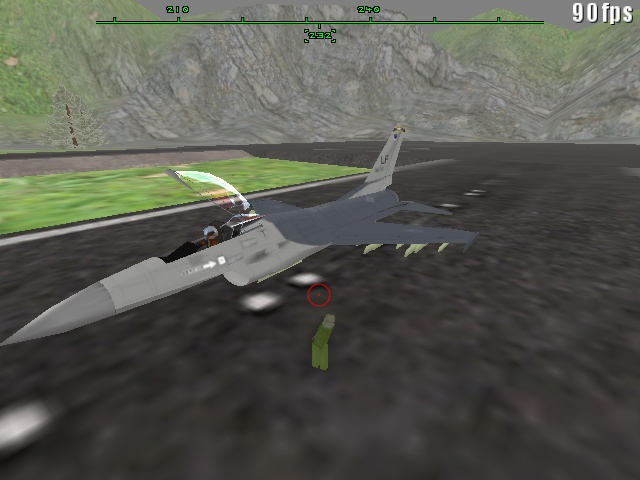
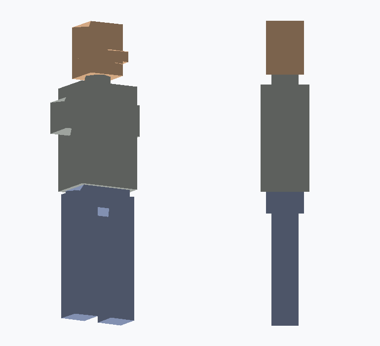

Short version — for the feed post (paste this as the post that links the article)
Claude’s new Fable model dropped this morning. By tonight it had fixed a bug that’s been unshippable since 2003.
For weeks I’ve been reviving Military Forces (MFQ3), my old Quake III mod, with Claude. One feature beat every attempt: the “little people” — infantry the original team left 80% finished and never shipped. Previous Claude sessions got planes flying, helicopters hovering, a Cold War mode... but the soldier stayed broken.
Switched to Fable a few hours after release. One evening later: the soldier walks, boards a parked F-16, flies, and EJECTS with a parachute while the empty jet smokes off and explodes in the distance. Full story in the article. 👇
Article — paste into LinkedIn “Write article” (title, then body)
Hero image: the little green soldier standing next to his F-16 — see attached screenshots.
Twenty-something years ago I helped make a Quake III mod called Military Forces — planes, helicopters and tanks fighting over big outdoor maps. The team’s grand dream was “little people”: get out of your jet, run across the runway on foot, steal another one. The code is still full of their comments. They got it about 80% built, never shipped it, and the project went quiet around 2006.
For the last few weeks I’ve been resurrecting MFQ3 from the original source with Claude — as a hobby project and an experiment in what AI pair-programming can really do on a gnarly legacy codebase. It has gone further than I ever expected: the 2003 engine builds with modern MSVC, new aircraft converted from free 3D models with animated landing gear, a VTOL F-35B, a Cold War game mode, single-player missions. All of that was built with Claude Opus over many evenings, and it was genuinely impressive.
But the little people stayed broken. Across multiple sessions the infantry would either not appear in the menus at all, leave you stuck on a “Limbo” screen staring at an empty runway, or hard-crash the game inside the graphics driver the moment the soldier should have appeared. We parked it. Some bugs just feel cursed.
Anthropic released their new Fable model this morning. A few hours later I typed /model claude-fable-5 mid-session and said: “can you get lqm working?” (LQM is the mod’s internal name for the little people.)
What happened next was the most impressive debugging session I’ve watched an AI do. The soldier wasn’t one bug. It was five, stacked on top of each other, and Fable peeled them off one at a time:
A detail I loved: to chase the crash it set up a hands-free reproduction loop — a developer flag that auto-spawns the soldier, launch the game, soak for 50 seconds, check whether the process survived, read the flushed log. No human in the loop. It iterated on its own crash like an engineer with a debugger and infinite patience.
And then, because the soldier was finally standing on the runway, we just… kept going. By the end of the same evening:
Walk → board → fly → eject → float down → walk to the next plane. The loop we sketched on a forum twenty-two years ago, running, on a model that was released the same day.
Same codebase, same tools, same me. What changed was the model’s appetite for root cause. Where earlier sessions would fix the visible symptom and stall on the next layer, Fable kept pulling the thread — five layers deep — building its own test harnesses and side agents along the way, and never once asked me to just try turning it off and on again.
I’m not claiming a benchmark; this is one stubborn bug in one weird old codebase. But if you have a “cursed” ticket that’s survived several attempts, it might be worth one more go this week.
The whole revival is documented at mattgreenworks.co.uk/mfq3, and the source work lives on GitHub. Next up: giving the little fella a proper walk animation — and a third crack at the carrier landing.
Images to attach (in this folder)

Hero: the little person and his F-16 — “Press F to board”. (sarge-and-f16.jpg)

The Sarge model rendered by the offline MD3 tool that caught the corrupt file format. (sarge-preview.png)